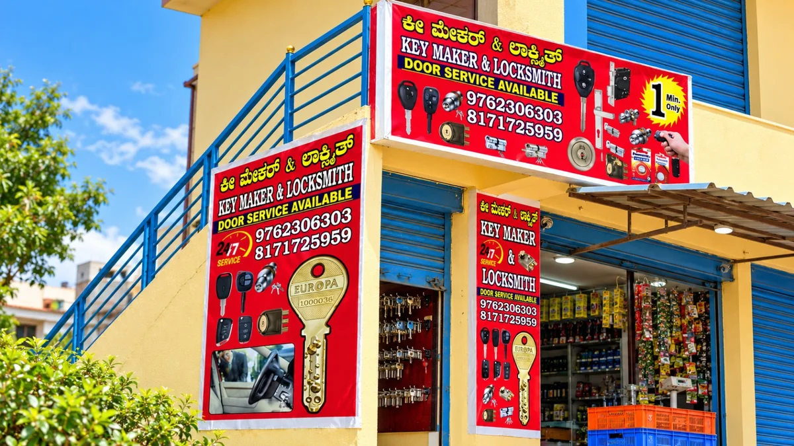

Home, office & shop key duplication
Spare house keys, cupboard keys, padlock keys and office or shop keys. We also cut compatible computerised and dimple keys after checking the original key profile.
Bring your original key, if available.Gollahalli Main Road · Electronic City Phase 1
A spare key. A working lock. Help when you need it. Visit our Bengaluru shop for key duplication or call us for locksmith service at your location.
House & shop keys · Car & bike keys · Lock repairs

Day or nightOpen 24 hours · Monday–Sunday
Shop & on-site serviceVisit us or request a call-out
Clear quotesConfirm the work and price first
Keys, locks & everyday fixes
From a duplicate house key to a car remote or a faulty door lock, tell us what you need. We’ll check the key, lock or vehicle type and explain the next step.
Spare house keys, cupboard keys, padlock keys and office or shop keys. We also cut compatible computerised and dimple keys after checking the original key profile.
Bring your original key, if available.Key making and replacement for supported vehicles, compatible chip and remote programming, and new electronic key fobs. Replacement remote shells and covers are available for compatible models.
Share the make, model, year and key type.Locked out of your home, office, shop or vehicle? Call for assistance for authorised owners and occupants. We’ll confirm service availability, your location and the applicable charges.
Call for the fastest response and an arrival estimate.Help with sticking, faulty or damaged main-door and security locks. We repair, replace or install compatible locks, cylinders, handles, bolts and grille-lock hardware.
Send a photo of the existing fitting.Rekeying for suitable locks and repair or replacement of compatible window-lock fittings. We assess the existing mechanism before recommending parts or work.
Compatibility is checked before the job.Safe opening, lock installation and repair for authorised owners. Share the safe type and the problem so we can discuss the available service and provide a quote.
Tell us the safe type and issue first.Unsure which service you need? A photo of the key, lock or remote can help.
Ask us on WhatsAppA closer look
Find us behind the red Key Maker & Locksmith signs. Visit for duplicate keys, or contact us about a lock or vehicle key before you travel.

Repair, replacement and installation for compatible door hardware.

Bike key making and replacement for supported vehicle models.
Before you visit or book
We’ll help you understand the work, compatible parts and cost before you decide.
Call or WhatsApp with your key, lock or vehicle details. For a call-out, include your exact location.
We’ll check compatibility and availability, then discuss parts, programming, fitting and any travel charges.
Bring the original key where available, or arrange a visit to your home, office, shop or vehicle.
Local shop. Wider reach.
Based in Electronic City Phase 1, Bengaluru, we provide on-site service across the areas below. We also accept call-outs 10 km or more from the shop. Call with your address to confirm availability, arrival time and travel charges.
Come by. Or give us a call.
Look for the red Key Maker & Locksmith signboards and blue shutters shown in our cover photo.
Get Google Maps directionsKeys & locks,
day or night.
A few useful answers
Have a different question? Call us or send a message with the key, lock or vehicle details.
Find Key Maker & Locksmith | Electronic City on Gollahalli Main Road, Siraj Layout, Electronic City Phase 1, Bengaluru, Karnataka 560100. Use our Google Maps directions to find the shop.
Yes. We are open 24 hours every day, including weekends. Call or WhatsApp with your requirements and location to confirm the work and applicable charges.
We make and duplicate keys for supported vehicles. Share the make, model, year and existing key or remote details so we can check compatibility, cutting and programming requirements.
A replacement shell is the outer casing, not a complete programmed key. We also supply and program compatible electronic keys and fobs. Tell us whether the problem is the casing, buttons, electronics or a missing key.
Bring the original key where available. We will check the key profile and suitable blank before confirming cutting and pricing. For vehicle keys, also provide the vehicle make, model and year.
Yes. We visit customers across our 20 listed service areas, including locations 10 km or more from the shop. Share your exact address to confirm availability, arrival time and any travel or call-out charges.
The quote depends on the key or lock type, compatible parts, cutting or programming, installation and location. Contact us with the details to confirm the price before proceeding.
We accept cash, UPI and bank transfers through IMPS or NEFT.
Available 24/7
Let’s work out what you need.
Call for a faster response.